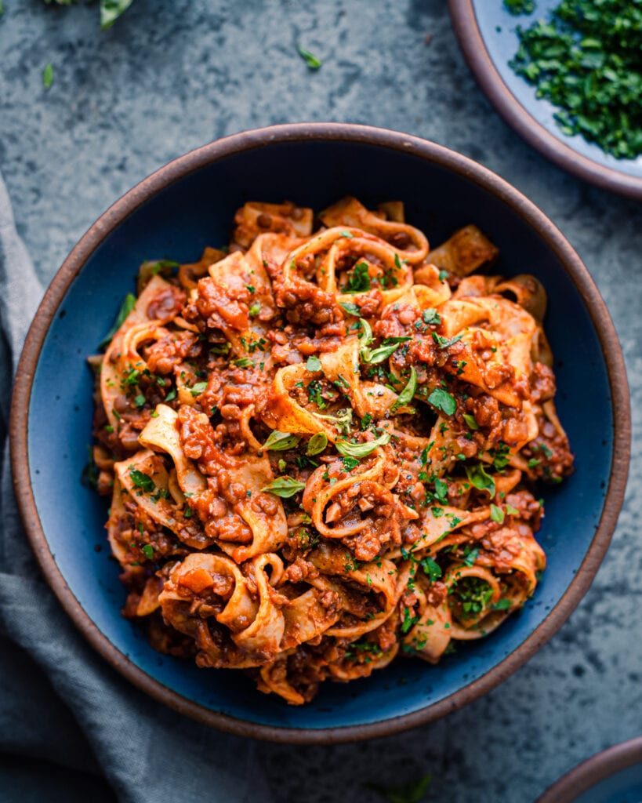

Lentil Bolognese

Description
This bolognese is hearty and packed umami whilst being 100% wholesome and vegan. It's made with just 10 main ingredients - all pantry staples!
Servings = 6
Ingredients
- 1 1/2 tbsp olive oil
- 1 large onion diced
- 4 garlic gloves minced
- 1 tsp dried oregano
- 1 tsp dried thyme
- 1 1/2 tsp salt
- Black pepper to taste
- 150g tube of tomato paste
- 120 ml dry red wine
- 720ml vegetable broth
- 185g red lentils soaked
- 32g walnuts (or pecans) finely crushed
- 1 can (410g) of tomatoes
- 340-450g of long, wide pasta
- 1 tbsp high-quality balsmic vinegar
- Flat-leaf parsley or fresh basil (optional)
Steps
- Soak the lentils in water for 30 minutes, or up to 60 minutes. Meanwhile, prep the other ingredients.
- Heat a 12-inch deep saute pan or Dutch oven on medium-high heat. Add the olive oil, and once it's shimmering, add the onions and season with a pinch of salt. Stir occasionally and cook the onions until a light brown fond starts form on the surface of the pan, about 5 minutes. Add a few spoons of water to deglaze the pan, and stir. Continue cooking the onions, adding more water every few minutes and stirring frequently to prevent burning, until the onions are softened and golden brown, 9-10 minutes.
- Add the garlic, thyme, oregano, 1 1/2 teaspoons kosher salt, and pepper to taste. Stir frequently and cook for 60-90 seconds.
- Stir in the tomato paste and cook for 2-3 minutes to caramelize, stirring very frequently, until it's darker red in color.
- Optional: If using the red wine, pour the wine into the pan and deglaze, scraping up any browned bits. Cook for 1-2 minutes, until the smell of alcohol has burned off and the mixture is jammy.
- Pour in the broth to deglaze the pan, stirring any browned bits on the bottom of the pot and stirring the broth into the tomato paste to combine. Add the lentils and walnuts, and stir to incorporate. Heat until the mixture comes to a boil, then reduce the heat to medium-low to maintain a rapid simmer for 20 minutes, stirring occasionally.
- Add the crushed tomatoes and simmer for another 15-20 minutes, or until the lentils are tender but still al dente, stirring occasionally to prevent burning and sticking.
- Meanwhile, bring a large pot of water to a boil and salt generously. Add the pasta and cook until just al dente. Reserve a ladle or so of pasta water (may not need it). Drain the pasta but do not rinse it.
- Taste the bolognese for seasonings, adding more salt and pepper to taste. Finish with balsamic vinegar and stir to combine.
- Add the hot cooked pasta to the bolognese and toss until well coated in the sauce, adding a bit of pasta water as needed to ensure the sauce coats the noodles. Garnish with chopped parsley or basil, if using.